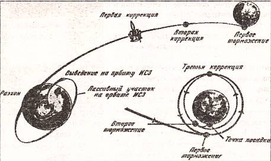
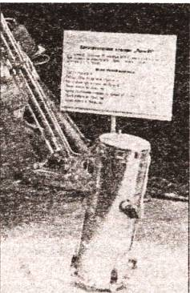
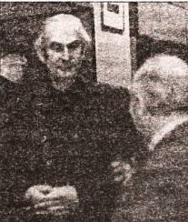
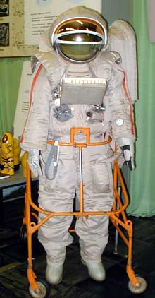
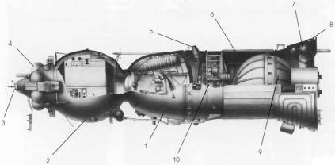
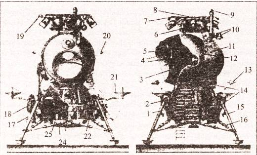
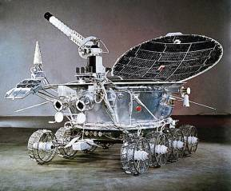
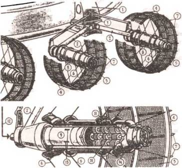

Тем временем в СССР
Казалось бы, сама судьба подарила нам возможность догнать американцев. Кстати, сын одного из погибших без обиняков назвал причиной катастрофы диверсию советских агентов. Однако эта версия особой поддержки у американцев не получила — было очевидно, что причиной пожара стало короткое замыкание в электропроводке.
Тем более что не успел мир забыть о катастрофе на мысе Канаверал, как аналогичное известие пришло из Советского Союза — при испытании нового корабля погиб В. М. Комаров.
Застопорилась и наша программа.
МИШИН ВМЕСТО КОРОЛЕВА. Запуск В. М. Комарова, как известно, стал первым после смерти С. П. Королева. Кое-кто и поныне полагает: будь жив Королев, Комаров бы не погиб…
Конечно, история не имеет сослагательного наклонения. Однако, что С. П. Королев имел куда больший вес в правительственных кругах, чем пришедший на смену ему В. П. Мишин, это очевидно. И характер у него был другой — властный, крутой. Его не только уважали, но и побаивались.
Словом, уникальность фигуры С. П. Королева состояла в том, что он, с одной стороны, идеально соответствовал административно-командной системе СССР, но, с другой стороны, умел ей и противостоять, а иногда даже действовал вопреки указаниям свыше, если считал свою позицию более правильной.
Академик же Василий Павлович Мишин — человек другого склада. Он был на своем месте, когда исполнял обязанности заместителя Главного конструктора, решал в основном научно-технические вопросы. Когда же он стал Главным, то ему пришлось столкнуться и с проблемами иного рода.
ПРОБЛЕМЫ «СОЮЗА». Следует отметить, что космический корабль «Союз» имел большое значение для пилотируемого облета Луны. По существу, он был прототипом лунного корабля, который наши секретчики зашифровали под индексом Л-3.
Впрочем, шифров было много. Аппарат «Зонд» — беспилотный вариант Л-3, также являлся лишь модификацией «Союза», предназначенной для отработки полетов к Луне и обратно.
Еще СССР с ноября 1966 года по апрель 1967 года запустил четыре беспилотных варианта «Союза», получивших официальные обозначения «Космос-14», «Космос-133», «Космос-146», «Космос-154».
При этом далеко не все из этих запусков прошли благополучно. Анализ полученных данных привел зарубежных экспертов к выводу, что пилотируемый вариант «Союза» запускать было рано.
Говорят, об этом знал и сам В. М. Комаров. Но отказаться от полета не мог, потому что знал: тогда вместо него полетит Ю. А. Гагарин. А подвергать товарища опасности вместо себя Комаров не мог.
Кроме того, наши специалисты в отличие от зарубежных экспертов полагали, что пробный пуск беспилотного «Союза» прошел, в общем-то, удовлетворительно.
«При единственном беспилотном пуске никаких отказов не было, если не считать того, что в тепловой защите прогорела маленькая пробочка. Аппарат спустился на какое-то озеро, вода через образовавшееся отверстие его наполнила, и он утонул. Его достали и убедились, что все было нормальным, а пробочки на штатном объекте (на „Союзе-1“. — С.С.) вообще не было, — сказал по этому поводу в одном из своих интервью В. П. Мишин. И добавил: „Все системы на „Союзе“, кроме систем сближения и стыковки, были такие же, как и на „Востоке“, „Восходе“, на некоторых специальных спутниках, и много раз испытывались в полете. Кроме того, на „Союзе“ все, что можно было зарезервировать, мы зарезервировали…“»
Причину же катастрофы Мишин видит в неправильной укладке парашютной системы.
Есть, впрочем, и иная точка зрения. Ученый и космонавт К. П. Феоктистов полагал, что парашют был зажат образовавшимся в контейнере отрицательным давлением, то есть разрежением. И это похоже на правду. Дело в том, что парашютный отсек был встроен в герметичную кабину, атмосфера которой сжимала стенки контейнера. Правда, когда запускали беспилотный вариант корабля, то из-за прогара пробочки в кабине образовался вакуум и давление вне и внутри парашютного отсека оказалось равным. При полете В. М. Комарова пробочки не было, в кабине было давление примерно в одну атмосферу, которое деформировало стенки парашютного отсека, и купол оказался зажатым.
К сожалению, в свое время ситуация не была смоделирована, не были проведены соответствующие испытания, которые однозначно выявили бы причину катастрофы.
ПСИХОЛОГИЧЕСКИЙ БАРЬЕР. Так или иначе, воспользоваться заминкой в программе «Аполлон» наши специалисты не смогли. У них самих оказалось проблем по горло, кроме парашютного отсека.
Главное, после гибели В. М. Комарова у советских космонавтов возник психологический барьер — люди боялись лететь на «Союзе». Если корабль «Восток» на практике доказал свою высокую надежность и за все время эксплуатации не имел серьезных отказов, то первый же пилотируемый полет «Союза» закончился катастрофой. Кто-то должен был сломать этот психологический барьер.
Ю. А. Гагарин предлагал свою кандидатуру для следующего полета на «Союзе». Однако «наверху» не хотели подвергать повышенному риску жизнь первого космонавта. И пока Гагарин пробивал эту бюрократическую стену, произошло второе несчастье — он погиб вместе с Серегиным во время тренировочного полета.
Прах обоих замуровали в Кремлевской стене, а проблема осталась. В конце концов выбор Госкомиссии пал на Г. Т. Берегового. Он был старше своих товарищей по отряду космонавтов (тогда ему было 47 лет), опытнее их. В годы Великой Отечественной войны он совершил 186 боевых вылетов и за свои ратные дела был удостоен звания Героя Советского Союза. До вступления в отряд космонавтов работал летчиком-испытателем, имел редкое в то время для космонавтов высшее образование. Словом, кандидатура во всех отношениях оказалась подходящей.
Г. Т. Береговой стартовал 26 октября 1968 года на «Союзе-3». Задача полета состояла в том, чтобы сблизиться, а затем и состыковаться с ранее запущенным беспилотным кораблем «Союз-2». Сближение прошло успешно, а вот стыковка не удалась. Сколько Береговой ни пытался, ничего не вышло.
В итоге, израсходовав запасы топлива, космонавт 30 октября приземлился, так и не выполнив своего задания до конца. Тем не менее благополучное завершение полета имело большое психологическое значение.
ГЛАВНОЕ — ВОВРЕМЯ ОСТАНОВИТЬСЯ… Успешно продолжались полеты и технологического аппарата Л-1 — прототипа будущего корабля для высадки на Луну. 10 ноября был запущен «Зонд-6», облетевший Луну и благополучно приземлившийся на территории СССР. Однако этот корабль был еще недостаточно отработан, чтобы с его помощью осуществить пилотируемый облет Луны.

Схема полета станции «Луна-17».
Наши специалисты отчетливо ощущали, что догнать им ушедших вперед американцев никак не удается. Они уже, решив все проблемы, прекратили эксперименты на аппаратах серии «Джемини», у нас аналогичные исследования по программе «Союз» только начались.
В узких кругах поговаривали о том, что, даже по самым оптимистическим прогнозам, полет на Луну советских космонавтов может состояться лишь в 1970–1971 годах, т. е. уже после того, как американцы побывают там несколько раз.
Казалось бы, именно в этот момент и нужно было принять решение об отказе от лунных экспедиций. Но, увы, работы по-прежнему продолжались и требовали все новых затрат.
КОГДА В ТОВАРИЩАХ СОГЛАСЬЯ НЕТ… Однако деньги эти тратились не очень уж толково. Дело в том, что еще при Королеве среди главных конструкторов началось некое брожение, приведшее к тому, что вместо единой лунной программы у нас образовалось сразу несколько, конкурировавших друг с другом.
Кстати, нечто подобное произошло и у американцев, но там положение спас Вернер фон Браун, взявший на себе решение ключевой проблемы — создание сверхмощной ракеты-носителя «Сатурн». А что получилось у нас?

Механическая «рука» для забора лунного грунта станции «Луна-16».
Главный конструктор В. Н. Челомей ратовал за свой 4-ступенчатый вариант ракеты-носителя «Протон», который, по его мнению, мог обеспечить пилотируемый облет Луны на модификации «Союза» — аппарате Л-1. Он даже обещал совершить такой полет в 1967 году, к 50-летию советской власти. Однако мощности этой ракеты не хватало, чтобы вывести к Луне спускаемый аппарат. Тут нужен был еще более мощный носитель.
Королев надеялся, что такой носитель или по крайней мере двигатели для него создаст конструкторское бюро В. П. Глушко. Но тот стал в позу, по существу, требуя себе взамен пост генерального конструктора, и Королеву пришлось передать заказ на двигатели в КБ Н. Д. Кузнецова, который до этого занимался лишь самолетными двигателями. Заодно там же попытались построить и лунную ракету Н-1.
Параллельно, чтобы хоть в чем опередить американцев, Королев затеял программу посылки на Луну беспилотных зондов, поручив их создание КБ Г. Н. Бабакина.
В общем, в итоге у нас вместо единой программы образовалось сразу несколько, и каждая требовала своего усиленного финансирования.
КОМУ ПОКАЗАЛИ «КУЗЬКИНУ МАТЬ»? В немалой степени тому способствовал, как ни странно, тогдашний руководитель советского государства. Н. С. Хрущев был фигурой довольно колоритной, увлекающейся. Он свято верил в преимущества социалистического строя, но доказывал это весьма своеобразно. Начал он с того, что на XX съезде КПСС не побоялся осудить культ личности И. В. Сталина.
Однако и сам натворил ошибок немало.
Это он, взобравшись на трибуну ООН, стучал башмаком по трибуне и обещал показать всем «кузькину мать». Наша делегация была оштрафована за его неэтичное поведение, а весь мир вдоволь посмеялся над его эксцентричностью.
Тот же Никита Сергеевич, начав массовое строительство жилья в нашей стране и пообещав, что «нынешнее поколение советских людей будет жить при коммунизме», одновременно начал освоение целинных земель и насаждение, где можно и где нельзя, кукурузы. Вся эта аграрная революция кончилась тем, что наша страна была вынуждена закупить в Канаде большое количество импортного зерна.
Он также ополчился на партократию и попытался умерить ее аппетиты, поделил крайкомы и обкомы на сельские и городские, провел очередную денежную реформу…
Но все эти благие, по ею мнению, начинания приводили лишь к дальнейшему ухудшению хозяйства огромной страны. Экономика СССР и гак уж не выдерживала нагрузки, а тут еще требовались огромные дополнительные расходы на завоевание Луны.
Первыми, как ни странно, взбунтовались военные, почувствовавшие, что Никита Сергеевич может бросить на Луну средства, предназначавшиеся на оборонные расходы. Их больше волновала позиция Китая, устраивавшего провокации в районе острова Даманский, нежели высадка на Луну.
Протестовал против лунной программы и Председатель Совета Министров СССР А. Н. Косыгин, отчетливо видевший все дыры в социалистической экономике.
НАЧАЛО СОВЕТСКОЙ ЛУННОЙ ПРОГРАММЫ. Тем не менее попытка опередить американцев хотя бы на каком-то этапе подготовки высадки на Луну была предпринята. Американские спутники-шпионы зафиксировали строительство пускового и монтажного комплексов на Байконуре, а также новой антенны в Центре управления полетами в Калининграде (под Москвой). Американцы знали даже, что в нашем отряде космонавтов тренируются 60 человек.
Далее, 2 марта 1968 года трехступенчатая ракета-носитель «Протон» вывела в космос беспилотный вариант аппарата Л-1, известного как «Зонд-4». Испытания прошли нормально, что вселило в специалистов новые надежды.
Была даже предпринята попытка доказать возможность осуществления пилотируемого полета на Луну по так называемой двухпусковой схеме. Попросту говоря, двумя ракетами «Протон» на околоземную орбиту нужно было вывести две части лунного комплекса. Состыковать их, а затем уже стартовать к Луне. Но технические сложности проекта оказались таковы, что Госкомиссия не приняла этого варианта к реализации.
Тогда 15 сентября был запущен «Зонд-5», который облетел Луну и вернулся на Землю. Он приводнился в Индийском океане, но при спуске обнаружились некоторые неполадки — перегрузка и температура оказались больше расчетных.
Параллельно продолжались работы по проектам Н-1 и Л-3.
СЕКРЕТЫ ПОЛИШИНЕЛЯ. Уже потом, когда наша попытка опередить американцев явно провалилась, когда весь мир смотрел прямую трансляцию высадки американцев, советская пропаганда сделала довольно неуклюжую попытку доказать прежде всего гражданам Страны Советов, что мы не полетели на Луну потому, что мертвый спутник нашей планеты нас особо не интересовал. А поэтому, дескать, советские специалисты ограничились лишь посылкой туда автоматов и пары луноходов.
На самом деле все это, мягко говоря, не соответствует действительности. На деле события разворачивались совсем по другому сценарию.
После гибели Ю. А. Гагарина командиром отряда космонавтов стал В. Ф. Быковский. А еще спустя некоторое время его и других космонавтов — А. Леонова, Н. Рукавишникова, В. Кубасова, П. Поповича и В. Севастьянова — рекомендовали для участия в подготовке по программе Л-1. Или, говоря попросту, они начали готовиться к полету на Луну. И, забегая вперед, скажу, что космонавты свою часть задачи практически полностью выполнили. Но полет так и не состоялся. Почему?
О том, как развивались события дальше, впервые я узнал от одного из непосредственных участников этой эпопеи, В. Н. Пикуля. В описываемый период он был главным инженером производства, занимавшегося двигателями для лунной ракеты. Ему и слово.
«На проходившей, если мне не изменяет память, в 1975 году в Москве Международной книжной ярмарке произошла тихая сенсация, — рассказывал он. — Дело в том, что среди многих книг в американской экспозиции была выставлена энциклопедия К. Гэтланда „Космическая техника“. Этот богато иллюстрированный том и произвел в некоторых научно-технических кругах нашей страны эффект разорвавшейся бомбы…»
А все дело в том, что на страницах книги рядом с американским носителем «Сатурн-5», выводившим на лунную орбиту корабли типа «Аполлон», была помещена фотография советской лунной ракеты Н1. Той самой, разработка которой считалась одним из величайших секретов отечественной космической отрасли.
Жизнь, таким образом, в очередной раз доказала, что шила в мешке не утаишь. В 60-70-е годы гигантскую сигару Н1 несколько раз вывозили на стартовые позиции Байконура. Этого оказалось достаточно, чтобы ракету сфотографировали вездесущие спутники, а специалисты НАСА по снимкам определили возможное назначение носителя. Остается лишь загадкой, почему про эту ракету столько лет ничего не писали в советской печати. Впрочем, загадка ли? Нет, еще со времен Сталина живуча у нас привычка к засекреченности, хотя сплошь и рядом все это секреты Полишинеля.

Разработчик лунного скафандра И. П. Абрамов.
Ракету Н1 можно назвать «последней любовью» С. П. Королева. Главный конструктор мечтал не только о завоевании человеком околоземного пространства, но и о полетах к другим планетам.

Советский лунный скафандр.
УТВЕРЖДЕНИЕ ПРОЕКТА. Постановление о создании новой ракеты-носителя Н1, способной поднять в космос 40–50 тонн полезного груза, было принято в 1960 году. В дальнейшем проект не раз пересматривался. Наконец в ноябре 1966 года правительственная комиссия под руководством академика М. В. Келдыша дала «добро» на эскизный проект лунной экспедиции.
По плану, на Луну должен был высадиться один космонавт; второй поджидал бы товарища на окололунной орбите. Надо сказать, что этот проект находился на грани разумного риска.
В свое время, как уже говорилось, мне довелось побывать на фирме «Звезда». Так называются КБ и опытный завод, которым ныне руководит член-корреспондент РАН Г. И. Северин. Здесь занимаются системами жизнеобеспечения для космонавтов и летчиков. Здесь же в свое время были сконструирован и лунный скафандр для наших космонавтов.
Так вот, как мне рассказали сотрудники КБ, в частности, ведущий конструктор лунного скафандра И. П. Абрамов, инженерам пришлось предусмотреть многие тонкости, о которых человек несведущий и не задумается. Например, пришлось разрабатывать специальную методику вставания космонавта, если вдруг он нечаянно упадет на поверхности Луны. Ведь помочь ему было бы некому. Американцы-то не случайно отправляли на лунную поверхность сразу двоих. У нас на это мощности ракеты не хватало…
РАЗДОРЫ ПРОДОЛЖАЮТСЯ. Впрочем, вернемся к рассказу В. Н. Пикуля. Что же произошло с нашей лунной программой? Почему ее так и не довели до конца?
Американцы объявили во всеуслышание, что стартуют к Луне в 1969 году. Мы приступили к аналогичной работе в феврале 1967 года. Времени, как видите, оставалось не так уж много. Ведь перед конструкторами, как водится, была поставлена задача: догнать и перегнать Америку!
Заочная гонка, конечно, лихорадила и производство, и конструкторов. Да тут еще длинная цепь неудач и неурядиц. Пока в США вся национальная индустрия согласованно решала поставленную президентом задачу — высадить американских парней на Луну, у нас началось очередное выяснение отношений. «Хозяйство» Королева чуть было не осталось без двигателей к лунной ракете.
Сделать такой двигатель, как уже говорилось выше, в ту пору могло только конструкторское бюро, которым руководил академик В. П. Глушко. Конечно, Валентин Петрович, как и Сергей Павлович, многое сделал для советской космонавтики. Но уж коли мы взялись заполнять «белые пятна» истории, надо говорить правду. В данном случае Глушко наотрез отказался выполнять работу.

Советский лунный орбитальный корабль «ЛОК» ракетно-космического комплекса Н1-ЛЗ (1964 год): 1 — спускаемый аппарат; 2 — бытовой отсек; 3 — стыковочный узел; 4 — отсек двигателей ориентации и причаливания; 5 — двигатели причаливания; 6 — агрегатный отсек; 7 — энергетический отсек; 8 — двигатели ориентации; 9 — ракетный блок «И»; 10 — приборный отсек.
Официальная причина отказа состояла в том, что два крупных авторитета не сошлись во мнении, какими должны быть эти двигатели. Было ясно, что керосин и сжиженный кислород исчерпали свои возможности. Королев предлагал перейти на водород и кислород. Глушко же представлял, что лучшей альтернативой будут фтор и азотная кислота.
Логика в рассуждениях Глушко, безусловно, была — такое топливо занимает меньший объем, обладает высокими энергетическими возможностями. Однако надо ведь было думать и о том, какой урон будет нанесен окружающей среде. Ведь и фтор, и азотная кислота крайне ядовиты!..
Впоследствии, кстати, Глушко пересмотрел свой взгляд. Созданная в его КБ ракета-носитель «Энергия» работает именно на водороде. Но в то время…
Споры продолжались, время шло. В конце концов Королев был вынужден передать заказ на лунные двигатели в КБ Н. Д. Кузнецова, базировавшееся в Куйбышеве. Надо отдать должное кузнецовцам, несмотря на то, что специалисты КБ до этого подобной тематикой не занимались, не имели достаточного опыта, они с честью выполнили возложенную на них трудную задачу. Двигатели были выполнены по наиболее экономичной — замкнутой схеме, при которой отработанный в турбине газ еще дожигается в небольшой камере высокого давления.
Ракета получилась выше знаменитой кремлевской колокольни Ивана Великого. В основании «башни» находилась связка из 30 двигателей, которые не только создавали тягу, но и давали возможность управлять ее полетом.
Много новшеств содержалось и в конструкции самой ракеты. Системы управления, измерительная техника, многие конструкторские решения были выполнены на высшем техническом уровне того времени. Так, в частности, удалось изготовить легкие, но прочные сферические топливные отсеки, а также отказаться от некоторых силовых элементов, переложив их обязанности «по совместительству» на другие, конструкционные.

Посадочный лунный корабль Ж ракетно-космического комплекса «Н1-ЛЗ» (1964 год): 1 — лунный посадочный агрегат; 2 — ракетный блок «Е»; 3 — кабина космонавта; 4 — блоки системы жизнедеятельности; 5 — прибор наблюдения при посадке; 6 — блок двигателей ориентации; 7 — радиатор системы терморегулирования; 8 — стыковочный узел; 9 — датчик прицеливания; 10 — котировочные датчики; 11 — приборный отсек; 12 — телевизионная камера; 13 — всенаправленные антенны; 14 — источники питания; 15 — опорная стойка с амортизатором; 16 — подкос с амортизатором; 17 — посадочный радиолокатор; 18 — навесной приборный отсек; 19 — слабонаправленные антенны; 20 — антенны системы сближения; 21 — телевизионные антенны; 22 — двигатель прижатия; 23 — основной двигатель; 24 — отражатель; 25 — резервный двигатель.
«Словом, и спустя десятилетия нам не стыдно за выполненную работу», — сказал мне тогда В. Н. Пикуль. И его слова вскорости были подтверждены на практике. Старыми двигателями, так и не использованными, несколько лет тому назад заинтересовались американские производители, проводившие конкурс на создание новой ракеты-носителя. Куйбышевцы, ставшие к тому времени уже самарцами, заглянули на свои склады и обнаружили там несколько десятков сделанных в свое время двигателей. Они были поставлены на испытания сначала на родном заводе, потом за океаном и показали себя с самой лучшей стороны даже спустя тридцать лет после их изготовления. Вот как у нас, оказывается, умеют работать!
КОНЕЦ РАКЕТЕ Н1. Однако вернемся к самой лунной гонке. Неприятности, начавшиеся с отказа Глушко, между тем продолжались. Умер С. П. Королев. На его место был назначен В. П. Мишин, что опять-таки не понравилось В. П. Глушко. Мышиная возня продолжалась, несмотря на то что на одном из совещаний Д. Ф. Устинов, курировавший проблему, поставил вопрос прямо:
«Через два месяца праздники, в США снова полетят. Что сделали мы?!»
В спешке начались летные испытания. Первый старт был назначен на 21 февраля 1969 года. Через 70 секунд после включения двигателей в хвостовом отсеке ракеты начался пожар… Примерно через пять месяцев — попытка второго запуска, и снова неудача. Из-за неисправности кислородного насоса произошел сильный взрыв, разрушивший весь стартовый комплекс. На его восстановление, анализ причин аварии и строительство новой ракеты понадобилось немало времени. Поэтому очередной старт состоялся лишь 27 июля 1971 года. Ракета поднялась над землей, но… Из-за потери управляемости дальнейший полет был прерван.
С четвертой попытки 23 ноября 1972 года запуск наконец состоялся. Но и он был неполноценным. Все двигатели первой ступени отработали нормально, полет продолжался уже 107 секунд, как вдруг в ракете снова случилась неисправность. Полет опять-таки пришлось прервать.
Конечно, цепь неудач действовала всем на нервы. Однако никто не паниковал. Четыре-пять неудачных запусков при испытаниях новой ракетной техники — обычное дело. Даже знаменитая «семерка» — первая из ракет-носителей С. П. Королева, которая продолжает эксплуатироваться и по сей день, полетела лишь после трех неудачных попыток.
Ракета, которую готовили к генеральной репетиции, существенно отличалась от предшественниц. Двигательные установки теперь могли срабатывать многократно и были подвергнуты тщательным проверкам. Никаких замечаний по наземным испытаниям не было.
Пятый старт был назначен на август 1974 года, а на конец года — шестой и, как считали многие, последний перед принятием Н1 в серийную эксплуатацию. Но больше стартов не последовало.
Правительственным указом работы по лунной программе были сначала заморожены, а после смены в мае 1974 года Главного конструктора (вместо В. П. Мишина назначили все же добившегося своего В. П. Глушко) вообще прекращены. Новый руководитель предложил и новую концепцию, которая десять с лишним лет спустя привела к созданию системы «Энергия»-«Буран». А саму ракету отправили на свалку, откуда ее фрагменты растащили по своим дачным участкам хозяйственные байконурцы.
Не берусь особо комментировать высокие решения. История Н1 еще ждет глубокого изучения, бесстрастных летописцев. Но, по-моему, свертывание нашей лунной программы было продиктовано прежде всего тем соображением, что на Луну мы опоздали и там уже побывали американцы. И наше тогдашнее руководство — кстати, на смену Н. С. Хрущеву пришел Л. И. Брежнев — предпочло сохранить хорошую мину при плохой игре: «Мы, дескать, туда не очень и стремились…»
Хотя на самом деле это и не так.
ИСТОРИЯ «ЛУНОХОДОВ». О том, что история официальная и неофициальная сильно разнятся, видно на примере хотя бы тех же «луноходов» и особенностей их конструкции.
Кстати, известно ли вам, что создание этого уникального агрегата — одна из самых славных страниц истории советской космонавтики? Хотя и тут не обошлось без некоторых эксцессов.
Начать хотя бы с того, что имена ученых и инженеров, сконструировавших и построивших «Луноход-1» и «Луноход-2», долгое время держались в секрете. Правда, теперь мы знаем — первое транспортное средство для Луны было создано в конце 60-х годов XX века в бывшем «почтовом ящике», что базируется в подмосковных Химках, под руководством Г. Н. Бабакина. А вот изобретено оно намного раньше, в середине 50-х. Как это произошло? Кто придумал первый вариант «лунохода»? Вот что об этом мне рассказал человек, лично знавший изобретателя, кандидат физико-математических наук Виталий Александрович Бронштэн.

Советский луноход.
Звали его Юрий Сергеевич Хлебцевич. Он родился в 1916 году в городке Черемхове под Иркутском в семье преподавателей. В 1921 году все семейство перебралось в Москву, где Юрий закончил семилетку, потом фабрично-заводское училище, рабфак и, наконец, Московский энергетический институт.
В 1941 году, с началом войны молодого инженера призвали в армию. Но вскоре он был отозван в Москву для доработки изобретенного им взрывателя для мин. И с 1943 года десять лет проработал в засекреченном конструкторском бюро, защитил кандидатскую диссертацию. А когда перешел на работу в Московский авиационный институт, появились больше свободного времени, возможность заняться проектами не только сегодняшнего, но и завтрашнего дня.
В ту пору журнал «Знание — сила» попробовал заглянуть на два десятилетия вперед, посмотреть на мир как бы из года 1974-го. Авторы журнала, среди которых был и Ю. С. Хлебцевич, постарались придать своим фантастическим очеркам максимум реальных деталей. В помещенном на страницах якобы правительственном сообщении о полете и высадке на Луну первой советской экспедиции приводились фамилии космонавтов (конечно, вымышленные), подробности технического оснащения…
С датами и фамилиями, как известно, произошел «прокол»: первая экспедиция на Луну высадилась в 1969 году и на Луне оставили свои следы не четверо, а двое астронавтов (третий ожидал на окололунной орбите), и фамилии они носили американские… А вот что касается некоторых технических подробностей, тут авторы попали в самую точку. Последующие полеты показали, что на лунную поверхность можно опускаться, не боясь утонуть в пыли, что по Селене можно не только ходить, но и передвигаться на транспорте…
«Больше технических подробностей затем появилось в „Литературной газете“ (от 4 августа 1955 года) и в журнале „Наука и жизнь“ (№ 2 за 1955 год), — рассказывал Бронштэн. — Имя Хлебцевича, как автора проекта управляемой по радио танкетки-лаборатории, прочно вошло в лексикон лекторов, выступающих тогда на модную тему „Есть ли жизнь на других планетах?“. Я и сам отлично помню, читая лекции в Московском планетарии, не раз употреблял термин „танкетка Хлебцевича“…»
Чтобы нагляднее представить, насколько революционной была его идея, напомню, что до запуска первого спутника оставалось еще два года и обо всем, что касалось космических полетов, всерьез говорилось лишь в очень узком кругу специалистов. А тут сразу — шум на всю страну и за ее пределами. Идея, что называется, овладела массами. И кое-кому это не понравилось…

Устройство самоходного шасси «Лунохода-1»: 1 — кронштейн блока колес; 2 — балансиры и торсионы; 3 — ограничитель хода; 4 — обод; 5 — сетка; 6 — спицы; 7 — грунтозацепы; 8 — электромеханический силовой привод; 9 — электродвигатель; 10 — трансмиссионный узел; 11 — механизм разблокировки; 12 — кабель питания и телеметрии; 13 — температурные датчики; 14 — система уплотнений.
В начале 1959 года Юрий Сергеевич с тревогой в голосе сообщил директору Московского планетария, что все его статьи из редакций изъяты, а ему самому строго-настрого запретили впредь писать или рассказывать публично о своих разработках.
«Как, кто запретил?!»
«Соответствующие органы…»
Хотя прошло уже шесть лет со дня смерти И. В. Сталина, порядки в стране по-прежнему оставались жесткие, так что решение «органов» никто особо и не пытался оспаривать. Правда, кое-кто из лекторов как бы подпольно продолжал рассказывать о танкетке Хлебцевича. Но эта «партизанщина», на счастье, не привлекла тогда внимания КГБ — аудитория у лекторов была не ахти какая массовая…
«Но почему последовал такой запрет?» — поинтересовался я у Виталия Александровича.
«Точно я этого не знаю, а спросить уже не у кого — Юрий Сергеевич Хлебцевич умер в 1966 году. Да и сам он, я уверен, многого не ведал…»
Остается ступить на зыбкую почву предположений.
Скорее всего, запрет последовал потому, что где-то в недрах «королевского хозяйства» примерно в это время были начаты работы по созданию реальных «луноходов». И шум в прессе на эту тему прекратили во избежание случайных утечек информации. У нас в то время любили всяческие космические секреты.
Но если это так, почему не пригласили к сотрудничеству самого Юрия Сергеевича? Уж ему бы, казалось, и карты в руки! Объяснение этому может быть такое: Хлебцевич был не «из той системы». Возможно, С. П. Королев даже хотел привлечь специалиста, но сделать это без согласия «компетентных органов» он не мог. И поручил освоение Луны Георгию Николаевичу Бабакину.
Кстати, в музее Научно-производственного объединения, которое ныне носит имя Г. Н. Бабакина, вам могут показать уникальный в своем роде экспонат — «Луноход-3».
Два первых «лунохода», как известно, остались на Луне. А вот «Луноход-3» туда не долетел. Потому как был спроектирован совсем для другой цели. Если бы на Луну, как намечалось, ступили наши космонавты — Валерий Быковский или Алексей Леонов, — они бы не только ходили, но и катались на специализированном транспорте. Для этого на «Луноходе-3» предусматривалась площадка, на которую мог стать человек в скафандре подобно тому, как располагаются водители на электрокарах. К сожалению, прокатиться никому не пришлось: советская лунная программа была свернута и «Луноход-3» отправился в музей.
Чекисты к ней, кстати, руку прикладывали еще дважды. Нет, никто на самом деле не организовывал «лунодрома» в подвалах Лубянки. То чистой воды вымысел. Но вот одного из настоящих водителей «лунохода», Вячеслава Довганя чекисты на допрос действительно вызывали. Выпытывали у него, кому он разболтал о своем участии в лунной программе.
Дело в том, что, когда по телевидению показали первую передачу про «луноход» и его путешествия по Луне, на имя Довганя в Центр управления пришла телеграмма с поздравлениями от коллег. «Откуда, дескать, они узнали?» — допытывались чекисты, совершенно упустив из вида, что телеграмму-то прислали сами разработчики шасси и других агрегатов того же «лунохода», с которыми Довгань сотрудничал при отладке уникального агрегата, проводил совместные испытания на «лунодроме», устроенном в Крыму.
Еще один испытательный «лунодром» был устроен на Камчатке. Место для него, весьма напоминавшее лунный ландшафт, подыскал вулканолог Генрих Штейнберг. «Но когда собрались доставить туда один из прототипов „лунохода“, — вспоминал он, — оказалось, что привезти его можно лишь на вертолете. Причем по соображениям секретности я никому не мог сказать, зачем мне нужен этот вертолет. А сроки поджимали…»
В общем, Штейнберг решил задачу обычным советским способом: он организовал «левый» рейс вертолета, успешно и в срок провел испытания. А потом чуть не сел в тюрьму; следователи у него долго выпытывали, какую личную корысть он преследовал при организации того вертолетного рейса…
Ну, да ладно об этом. Задачу свою и «луноходы», и их создатели, и их испытатели в конце концов выполнили, продемонстрировали миру еще одно техническое «чудо». И не их вина, что прокатиться на «луноходе» нашим космонавтам так и не пришлось…